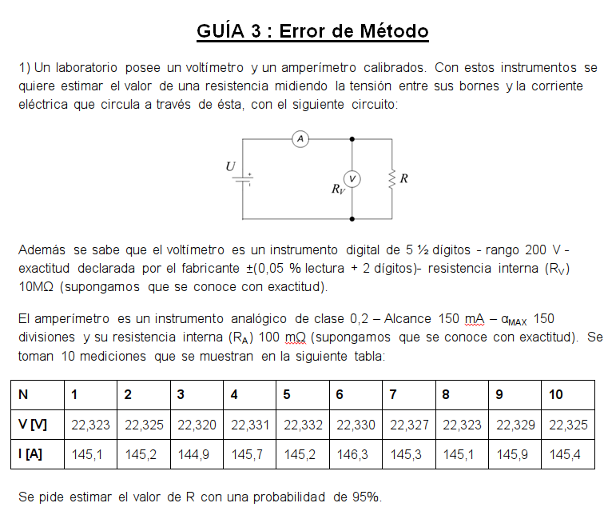

GUIA 2 : Medidas Electronicas 1 Utn FRBA
Ejercicio 1

[27]:
import numpy as np
RANGO = 200
ERROR_LECTURA = 0.05
ERROR_CUENTA = 2
CANT_MAX_CUENTAS = 200000
R_V = 10000000
ERROR_CLASE = 0.2
ALCANCE = 150
DIVISIONES = 150
RA = 0.01
V = np.array([22.323, 22.325, 22.32, 22.331, 22.332, 22.33, 22.327, 22.323, 22.329, 22.325])
I = np.array([145.1, 145.2, 144.9, 145.7, 145.2, 146.3, 145.3, 145.1, 145.9, 145.4])
V_mean = V.mean()
I_mean = I.mean()
u_i_V = V.std(ddof=1) / np.sqrt(V.size)
u_i_I = I.std(ddof=1) / np.sqrt(I.size)
CORRELACION_MATRIX = np.corrcoef(V,I)
corr_VI = CORRELACION_MATRIX[0][1]
R_i = V_mean / I_mean
dR_dV = 1 / I_mean
dR_dI = - V_mean / I_mean**2
u_j_V = (ERROR_LECTURA / 100 * V_mean + ERROR_CUENTA * RANGO / CANT_MAX_CUENTAS) / np.sqrt(3)
u_j_I = (ERROR_CLASE * ALCANCE / DIVISIONES)
u_c_V = np.sqrt(u_i_V**2 + u_j_V**2)
u_c_I = np.sqrt(u_i_I**2 + u_j_I**2)
u_c_R = np.sqrt((dR_dV * u_c_V)**2 + (dR_dI * u_c_I)**2 + 2*dR_dI*dR_dV*corr_VI*u_c_V*u_c_I)
V_eff = (u_c_R**4) / (((dR_dV * u_i_V)**4 + (dR_dI * u_i_I)**4) / (V.size - 1))
K = 3 # De tabla distribucion T-Student entre 3 y 4 grados de libertad
print ("TBM R = %0.6f K" % ((R_V * R_i)/(R_V + R_i)))
print ("No hace falta corregir ya q el em = -R_i/(R_V / 1000) = %0.6f es mucho menor que u_c_R * K / R_i = %0.6f" % (-R_i/(R_V / 1000), u_c_R * K / R_i))
print ("R = %0.8fK +- %0.8fK @ 95%%; k = %0.2f" %(R_i, u_c_R * K, K))
TBM R = 0.153542 K
No hace falta corregir ya q el em = -R_i/(R_V / 1000) = -0.000015 es mucho menor que u_c_R * K / R_i = 0.004367
R = 0.15354171K +- 0.00067058K @ 95%; k = 3.00
Ejercicio 2

Circuito

Em
\[e_M = \frac{V_V - V_G}{V_G}\]
\[e_M = \frac{|V_G||\frac{Z_V}{Z_G + Z_V}|-|V_G|}{|V_G|}\]
\[e_M = |\frac{Z_V}{Z_G + Z_V}|-1\]
\[e_M = |\frac{1}{\frac{Z_G}{Z_V} + 1}|-1\]
\[e_M = |\frac{1}{Y_V Z_G + 1}|-1\]
\[e_M = |\frac{1}{(G_V + S (C_C + C_V)) R_G + 1}|-1\]
\[e_M = |\frac{1}{(G_V + S (C_C + C_V)) R_G + 1}|-1\]
\[e_M = |\frac{1}{G_V R_G + jw (C_C + C_V) R_G + 1}|-1\]
\[e_M = |\frac{1}{\sqrt{(G_V R_G + 1)^2 + (w (C_C + C_V) R_G)^2}}|-1\]
\[e_M = \frac{R_V}{R_V + R_G}\frac{1}{\sqrt{1 + (w (C_C + C_V) R_G//R_V)^2}}-1\]
Valores
[41]:
import numpy as np
R_G = 600
R_V = 1000000
C_C = 150 * 10**(-12)
C_V = 220 * 10**(-12)
F = 15000
e_M = (R_V / (R_V + R_G)) / (np.sqrt(1 + (2*np.pi*F*(C_C + C_V)*((R_G * R_V)/(R_G + R_V)))**2)) - 1
print ("e_M = %0.6f" % e_M)
ESCALA = 2
ERROR_LECTURA = 0.05
ERROR_CUENTA = 2
CANT_MAX_CUENTAS = 20000
V_i = 1.8562
u_j = (ERROR_LECTURA / 100 + ERROR_CUENTA * ESCALA / CANT_MAX_CUENTAS / V_i) / np.sqrt(3) * 2
print ("u_j = %0.6f" % u_j)
print ("""Dado que e_M << u_j
Entonces se procede a corregir:""")
print ("V = %0.6f" % (V_i / (1 + e_M)))
e_M = -0.000818
u_j = 0.000702
Dado que e_M << u_j
Entonces se procede a corregir:
V = 1.857720
Ejercicio 3

Dato del multimetro continua:

Deduccion de \(F_{|me|e}\) para señal Triangular
\[F_{|me|e} = \frac {\frac {S_e}{S_{|me|}}} {K_{|me|}}\]
\[S_e = \sqrt{\frac{1}{T}\int_0^T V(t)^2dt}\]
\[S_e = \frac{V_p}{\sqrt{3}}\]
\[S^+=\delta S_{pp}\]
\[S^-=(1-\delta) S_{pp}\]
\[S_{|me|}=\frac{S_{pp}}{2}(2\delta^2-2\delta+1)\]
\[K_{|me|}=\frac{\pi}{2\sqrt{2}}\]
\[F_{|me|e} = \frac {\frac{\frac{V_p}{\sqrt{3}}}{\frac{S_{pp}}{2}(2\delta^2-2\delta+1)}}{\frac{\pi}{2\sqrt{2}}}\]
\[F_{|me|e} = \frac {2\sqrt{2}} {\pi(2\delta^2-2\delta+1)}\]
\[S_i = S_{|me|}K_{|me|}\]
Caso particular:
\[\delta = \frac{1}{2} => S_{|me|}=\frac{S_{pp}}{4}\]
[55]:
import numpy as np
CANT_MEDICIONES = 5
V_MEAN_DC = 0.953
V_MEAN_AC = 1.057
STD_DC = 0.0001
STD_AC = 0.00025
RANGE = 4
RESOLUTION = 0.001
ERROR_LECTURA_AC = 1
ERROR_CUENTA_AC = 5
ERROR_LECTURA_DC = .8
ERROR_CUENTA_DC = 1
R_V = 10000000
R_G = 500000
u_i_V_DC = STD_DC / np.sqrt(CANT_MEDICIONES)
u_i_V_AC = STD_AC / np.sqrt(CANT_MEDICIONES)
u_j_V_DC = ((ERROR_LECTURA_DC / 100) * V_MEAN_DC + RESOLUTION * ERROR_CUENTA_DC) / np.sqrt(3)
u_j_V_AC = ((ERROR_LECTURA_AC / 100) * V_MEAN_AC + RESOLUTION * ERROR_CUENTA_AC) / np.sqrt(3)
u_c_V_DC = np.sqrt(u_i_V_DC**2 + u_j_V_DC**2)
u_c_V_AC = np.sqrt(u_i_V_AC**2 + u_j_V_AC**2)
# Vp = DC + AC
u_c_Vp = np.sqrt(u_c_V_DC**2 + u_c_V_AC**2)
Spp = 4 * V_MEAN_AC * 2 * np.sqrt(2) / np.pi
e_m = 1/(1+(R_G/R_V)) - 1
print ("error metodo = ", e_m)
print ("e_m >> u_c => Procedo a corregir")
print ("Vp+ = %0.6fV +- %0.6fV @ 95%%" % ( (Spp/2 + V_MEAN_DC)/(1+e_m), u_c_Vp*2))
print ("Vp- = %0.6fV +- %0.6fV @ 95%%" % ((-Spp/2 + V_MEAN_DC)/(1+e_m), u_c_Vp*2))
error metodo = -0.04761904761904767
e_m >> u_c => Procedo a corregir
Vp+ = 2.999082V +- 0.020554V @ 95%
Vp- = -0.997782V +- 0.020554V @ 95%
Ejercicio 4